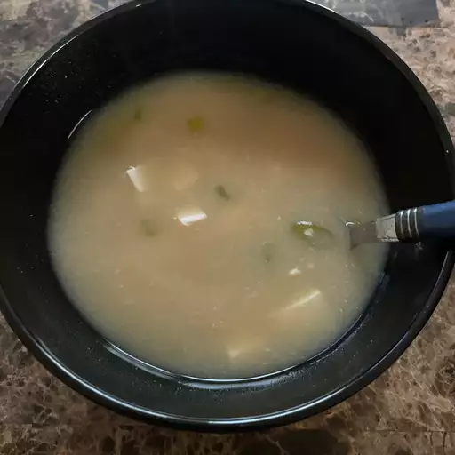

Miso Soup

Miso soup
A Japanese soup made from a dashi stock and flavored with miso paste.
Usually contains tofu and green onions. It can also feature seaweed, mushrooms, daikon, and more.
Ingredients
- Water
- Dashi granules
- Miso paste
- Tofu
- Green onions
Steps
- Step 1:the water and dashi granules to a boil.
- Step 2:Reduce the heat and whisk in miso paste.
- Step 3:Stir in the tofu and green onions.
- Step 4:Simmer and serve.